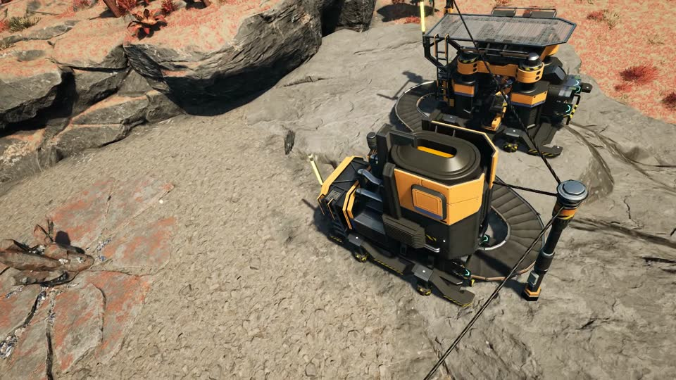
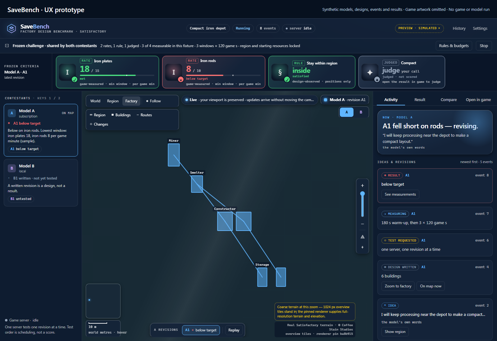

-
Trial 1
Test the measuring tool first.
Every trial starts with a control: a sample factory with a known answer. This one should have delivered both products. It showed zero copper and zero concrete in each of two 61-second windows.
That meant the measuring tool was broken, so the AI's factory was never judged. A missing measurement isn't scored as zero production.
-
Find the fault, then prove the fix.
The part that writes a design into the game's save file filled in a storage filter the game leaves empty. Materials reached the belts, but the depot counted none. The fix writes the filter the way the game does.
In the second trial the connected control delivered both products and a disconnected copy delivered nothing. Now the tool could see a delivery, and see when there wasn't one.
-
Trial 2
Measure the same design again.
Same design, byte for byte, and the same rule, fixed in advance: at least 20 copper ingots and 15 concrete a minute in every two-minute window, after a three-minute warmup.
-
Two of three windows missed. The FAIL stays.
Copper missed the first window. None had reached the depot when measuring began, most likely because the first ingots were still on a long belt, but the record doesn't prove that. Concrete missed the third by a hair: 30 delivered where 30.25 were needed, because one concrete machine runs at exactly the target rate. A good later window doesn't cancel an earlier miss.
The FAIL is specific and useful, so it stays on the record. Nobody loosened the target or combined the two trials into a score.
Work SaveBench
SaveBench · AI factory designCan an AI build a factory that actually runs?
SaveBench asks whether an AI can build a working factory in the game Satisfactory, by the game's own rules, with the running game as the judge. It began with AI models designing factories that the game then measured. A factory that only works on paper doesn't count.
Recorded experiment · game runs from September 9 to November 17, 2026 · see the record

Watch where it stands now.
A short animation of what the game has accepted so far, redrawn when the results change. Earlier versions stay below, so the progress can be followed in order.

The animation needs JavaScript. Every version's transcript is below.
Where it stands, as of November 17, 2026
- Live game mod
- 0.10.20, live on the first server since Nov 17, 12:03 AM CST (06:03 UTC). Its three fixes are not yet checked in the game. Verified
- Best AI model result
- Claude Opus 5.5 earned milestone 1-1 from a blank world on Nov 16, 11:48 PM CST, in 10 replies for 35 cents: 128 Iron Plate, 184 Iron Rod and 248 Concrete made by machines, no machine fed by hand. Declared hand steps: clearing two nodes, burner fuel, carrying finished parts to pay. One run, not repeated. Verified
- Best script factory
- Run BQ, Nov 16: milestones 1-2 and 1-1 earned in one world from Miner Mk1s and belts, burner fed by belt, 142 checks of 142. Verified
- Not done yet
- The AI result has not been repeated and no AI has earned milestone 1-2. Doubling a factory for milestone 1-3 stopped for lack of Cable. No vehicle has carried cargo and no train has run. Open
Every version, newest first
-
Current version
Adds the first milestone earned by an AI model (Claude Opus 5.5, one run), milestone 1-2 earned by a script with a copper Wire line, the burner that runs on belt fed fuel, and the first tries at trains, Hypertubes and overclocking.
Read this version's transcript
- 0:00: SaveBench. Can an AI build a working factory in Satisfactory, by the game's own rules? This is where it stands on November 17, 2026.
- 0:06: The first milestone. Start in a blank world and earn milestone 1-1. It costs 100 Iron Plate, 100 Iron Rod and 200 Concrete. It must be done the way a player does it: ore comes from miners on the map's ore nodes, parts move between machines by belt, and hands are only for getting started. The game is the judge: the milestone counts when the live game accepts the payment and launches it. Script is a reference run, a fixed list of steps we wrote, and it is not an AI. Two AI models have tried, each choosing every step by itself: deepseek-v4-flash on a budget of one dollar a day, and Claude Opus 5.5 on eight dollars a day.
- 0:20: The script run, run BL, November 14, shown as a diagram that is not to scale. The script clears the rock on an iron node by hand and builds a Miner Mk1 on it, powered by a Biomass Burner. Belts carry ore to the Smelter, ingots to the Constructor and plates into the bank. 324 Iron Plate arrive by belt, where 320 were wanted. The Constructor then switches to Iron Rod, and 202 arrive, where 200 were wanted. A second line starts at a Miner Mk1 on a stone node. The game refuses a belt that is too long, so the stone passes through four containers before a Constructor turns it into Concrete: 203, where 200 were wanted. No part was moved by hand between machines. In this run the burner was still refuelled by hand; that gap closed on November 16. The finished Concrete is carried to the bank once, to pay. The game accepts the payment and launches milestone 1-1. 59 checks of 59 passed. This is a script run, not an AI.
- 0:46: The second script run, run BP, November 16, shown as a diagram. Milestone 1-2 costs 150 Iron Plate, 150 Iron Rod and 300 Wire. The script builds a copper line first, at a copper node 268 metres from the bank: a Miner Mk1, a Smelter and a Constructor making Wire. The first 48 Wire are carried to the bank to pay for the iron line, a declared carry. The iron line runs into the bank by belt: 196 Iron Plate where 190 were wanted, then 170 Iron Rod where 170 were wanted. The copper line gets its container and 304 Wire arrive in it by belt, where 300 were wanted. The finished Wire is carried to the bank once, to pay. The game accepts the payment and launches milestone 1-2. 52 checks of 52 passed. In a separate run the same evening, a burner ran on fuel fed by belt with no hand refuel.
- 1:03: The DeepSeek run, run 4, November 14, shown as a diagram. DeepSeek cleared the rock and built a Miner Mk1, a Smelter, a Constructor, storage, a Biomass Burner and two belts, and wired the burner to the miner. It had spent all its Iron Rod. The last belt was refused because it cost 16 Iron Plate and the bank held 1. Power poles also cost Iron Rod, so the Smelter and Constructor never got power; for the poles this is inferred. Our harness told the model only that the placement was refused, so it spent 15 of its 34 replies looking for clear ground. The run stopped at its budget of 95 cents and the milestone was not earned. The fault was in our harness, not in how the model played. The fix was live for run 5 on November 16. In run 5 the model was told what it could not afford, but 14 of its 30 replies were used up thinking and produced no action, and it did not finish either. DeepSeek has now tried five times.
- 1:13: The Claude Opus 5.5 run, run 6, November 16, shown as a diagram. Claude Opus 5.5, an AI model, plays milestone 1-1 by itself from a blank world. It looked up an iron node, cleared the rock by hand, and built a Biomass Burner, a Miner Mk1, a Smelter and a Constructor, joined by belts. It tried to belt the Constructor to the bank and was refused, because our tool list did not offer the bank as a belt target, so it built a storage box. It ran power to a stone node and built a second Miner Mk1, a second Constructor and a second storage box for Concrete. Machines made everything the milestone costs: 128 Iron Plate where 100 were needed, then 184 Iron Rod where 100 were needed after it switched the Constructor, and 248 Concrete where 200 were needed. No machine was fed by hand. The declared hand steps were clearing the two nodes, 200 biomass for the burner, and collecting the finished parts from storage to pay. The game accepted the payment and launched milestone 1-1, after 10 replies and 35 cents. This is one run and has not been repeated yet.
- 1:28: Four stills filmed in the real game. November 9: a smelter feeding a constructor by belt, built by script. November 12: the Space Elevator over the base that earned phase one, by script. November 12: a smelter and constructors that DeepSeek placed by itself. November 14: a Miner Mk1 on an iron node, belted to a smelter, built by DeepSeek.
- 1:36: The scoreboard. Script: milestone 1-1 on November 14 with every part from miners by belt; milestone 1-2 on November 16 the same way, with a copper Wire line; and both milestones again in one world on November 16 with the burner fed by belt, 142 checks of 142. AI models: DeepSeek run 4 on November 14 built a miner line but never powered it; DeepSeek run 5 on November 16 built one miner and one belt and lost 14 of 30 replies to thinking; Claude Opus 5.5 on November 16 earned milestone 1-1 with every part made by machines. All six are verified from run records. An AI model has earned its first milestone, in one run that has not been repeated yet.
- 1:44: How it got here. October 27: the concept video, before anything had been measured in the game. November 9: the first belt between two machines in the live game. November 12 and 13: Space Elevator phase one, a Miner Mk1 feeding a belt, then 300 plates by belt. November 14: milestone 1-1 by a real factory and the first copper Wire. November 16: milestone 1-2, a burner fed by belt, and an AI model earns milestone 1-1. Game actions checked in the live game rose from 5 of 51 on November 9 to 28 of 51 on November 11, 38 of 52 on November 14 and 42 of 52 on November 16. The last two counts are a work thread's own and were not read from a file.
- 1:52: What is still ahead. A script run earned milestones 1-2 and 1-1 in one world, but doubling its iron line for milestone 1-3 stopped because the bank had no Cable for the new power lines. A Tractor drove 26 metres on autopilot on November 16, but no vehicle has carried cargo between stations yet. Claude Opus 5.5 earned milestone 1-1 once; next it has to repeat that, belt into the bank, feed the burner by belt, and go on to milestone 1-2. Trains, Hypertubes and overclocking were tried for the first time on November 16 and do not work yet.
- 2:00: The diagrams are drawn from run records. The stills are real game footage. On November 16 an AI model, Claude Opus 5.5, earned milestone 1-1 in one run that has not been repeated yet. Satisfactory imagery is the property of Coffee Stain Studios.
-
Earlier version
First version drawn from real results: milestone 1-1 earned by a script from miners and belts, the DeepSeek run that did not finish, four real game stills, the scoreboard and what is still ahead.
Read this version's transcript
- 0:00: SaveBench. Can an AI build a working factory in Satisfactory, by the game's own rules? This is where it stands on November 16, 2026.
- 0:06: The first milestone. Start in a blank world and earn milestone 1-1. It costs 100 Iron Plate, 100 Iron Rod and 200 Concrete. It must be done the way a player does it: ore comes from miners on the map's ore nodes, parts move between machines by belt, and hands are only for getting started. The game is the judge: the milestone counts when the live game accepts the payment and launches it. Two have tried. Script is a reference run, a fixed list of steps we wrote, and it is not an AI. DeepSeek is an AI model, deepseek-v4-flash, choosing every step by itself on a budget of one dollar a day.
- 0:20: The script run, run BL, November 14, shown as a diagram that is not to scale. The script clears the rock on an iron node by hand and builds a Miner Mk1 on it, powered by a Biomass Burner. Belts carry ore to the Smelter, ingots to the Constructor and plates into the bank. 324 Iron Plate arrive by belt, where 320 were wanted. The Constructor then switches to Iron Rod, and 202 arrive, where 200 were wanted. A second line starts at a Miner Mk1 on a stone node. The game refuses a belt that is too long, so the stone passes through four containers before a Constructor turns it into Concrete: 203, where 200 were wanted. No part was moved by hand between machines. The burner was still refuelled by hand, a known gap. The finished Concrete is carried to the bank once, to pay. The game accepts the payment and launches milestone 1-1. 59 checks of 59 passed. This is a script run, not an AI.
- 0:46: The DeepSeek run, run 4, November 14, shown as a diagram. DeepSeek cleared the rock and built a Miner Mk1, a Smelter, a Constructor, storage, a Biomass Burner and two belts, and wired the burner to the miner. It had spent all its Iron Rod. The last belt was refused because it cost 16 Iron Plate and the bank held 1. Power poles also cost Iron Rod, so the Smelter and Constructor never got power; for the poles this is inferred. Our harness told the model only that the placement was refused, so it spent 15 of its 34 replies looking for clear ground. The run stopped at its budget of 95 cents and the milestone was not earned. The fault was in our harness, not in how the model played. A fix is written and not yet live.
- 0:56: Four stills filmed in the real game. November 9: a smelter feeding a constructor by belt, built by script. November 12: the Space Elevator over the base that earned phase one, by script. November 12: a smelter and constructors that DeepSeek placed by itself. November 14: a Miner Mk1 on an iron node, belted to a smelter, built by DeepSeek.
- 1:04: The scoreboard. Script: on November 12, Space Elevator phase one earned from a blank world using storage boxes filled by hand; on November 13, 324 Iron Plate and 153 Iron Rod by belt from a Miner Mk1; on November 14, milestone 1-1 earned with every part from miners by belt. All three are verified from run records. DeepSeek: on November 13 it built a miner, belts and machines and collected 49 Iron Rod before its budget ran out, which is unverified; on November 14 it built a miner line but never powered it. No AI model has finished a milestone yet.
- 1:12: How it got here. October 27: the concept video, before anything had been measured in the game. November 9: the first belt between two machines in the live game. November 12: Space Elevator phase one and the first Miner Mk1 feeding a belt. November 13: over 300 plates by belt from a miner, and the first Tractor built. November 14: milestone 1-1 by a real factory, the first copper Wire and the first closed vehicle loop. Game actions checked in the live game rose from 5 of 51 on November 9 to 28 of 51 on November 11, 29 of 52 on November 13 and 38 of 52 on November 14. The last count is a work thread's own and was not read from a file.
- 1:20: What is still ahead. Milestone 1-2 by a real factory needs 150 Iron Plate, 150 Iron Rod and 300 Wire; the run is packaged and waiting to launch. A Tractor, two stations and a closed loop are built, but the game still refuses to let the Tractor drive and the cause is not known. No AI model has finished a milestone; DeepSeek's next run waits for the fix that tells it when it cannot afford a build. Beyond that lies the whole game: 141 buildings, and the aim is all of them.
- 1:28: The diagrams are drawn from run records. The stills are real game footage. Satisfactory imagery is the property of Coffee Stain Studios.
-
Concept, not real play
The first video. A concept of what SaveBench was meant to become, drawn before the game had measured anything. Layouts, contestants and numbers are placeholders.
Read this version's transcript
- 0:00: SaveBench concept video from October 27, 2026. This is a concept, not real play. It was drawn before anything had been measured in the game. Its factory layouts were made up for the drawing and its numbers were placeholders.
- 0:05: The concept challenge: build 15 Iron Plate per minute and 10 Iron Rod per minute with a short list of allowed buildings and two iron nodes. Two placeholder contestants, model A and model B, lock the contract.
- 0:19: The camera flies in to the build site. Model A plans a layout with two smelters feeding three constructors, then builds it. The camera cuts to model B, which builds a line fed through a splitter.
- 0:46: A game lens shows the same factory tilted into three dimensions. It is labelled as a reconstruction, with a placeholder where real footage would go.
- 0:54: A trial panel shows three measurement windows. The plate and rod rates read as placeholders because the game had not measured anything.
- 1:01: The two layouts are compared side by side. No winner is declared.
- 1:08: A replay bar scrubs back through the build.
- 1:14: The camera pulls out to the whole map and draws train, drone and truck routes to a Space Elevator. These routes were illustrations of an idea, not results.
- 1:24: End card. Layouts were fixtures and the values were placeholders.
Results, day by day
Game results logged from November 12, 2026 to November 17, 2026, newest first. Verified means the line was read from a run record when it was written. Unverified means it was reported by the work and not read again. Failed runs are kept. Later results join this log at its next update.
· 7 results
A quiet night after the first AI milestone. Mod 0.10.20 went live just after midnight and the second game server came back on it, but nothing has run in the game since 11:49 PM CST on November 16. This entry covers midnight to 7:48 AM CST.
- VerifiedMod 0.10.20 is live on the first game server. It carries three fixes: overclocking above 100%, the Hypertube entrance, and joining rail to a station platform. None of the three has been checked in the game yet.Nov 17, 06:03 UTC
- UnverifiedThe second game server was restarted on mod 0.10.20 and reported ready at 12:18 AM CST.Nov 17, 06:12 UTC
- VerifiedWhy run BQ's extra stage stopped: each new power line costs one Cable and the bank held none. It was not a placement fault. A player would craft Cable from Wire first; the bank held 64 Wire.
- UnverifiedThe next script run, BR, is written and tested offline (102 tests passed). It continues from BQ's saved world, crafts Cable, finishes the doubled iron line, then goes for milestone 1-3 and milestone 2-1. Milestone 2-2 has been added as a later extra. Not run yet.
- UnverifiedThe GPT-6.1 Sol player is installed as a second AI model, on a budget of five dollars a day. It has not played yet.Nov 17, 06:00 UTC
- VerifiedA tracing tool for the AI models' calls (Langfuse, internal only) was merged. Whether it is up and running has not been observed.Nov 17, 06:38 UTC
- UnverifiedThe public SaveBench pages on sternone.net were updated twice overnight with this log and the video, including the Claude Opus 5.5 result and a film of that run.
· 16 results
Work resumed at about 5:00 PM CST after two days stopped, and the evening was the busiest yet. A script earned milestone 1-2 with a copper Wire line, a burner ran on belt-fed fuel with no hand refuel, mod 0.10.19 went live and a second game server was added. DeepSeek's fifth run did not finish. Late in the evening one script run earned both milestones in one world, and then an AI model, Claude Opus 5.5, earned milestone 1-1: the first milestone earned by an AI. Trains, Hypertubes and overclocking above 100% were tried for the first time and do not work yet. Lines are in time order.
- VerifiedRun BO passed, 28 checks of 28: a burner ran on fuel that came to it by belt from a container, with no hand refuel. 64 Iron Plate (60 wanted) reached the bank by belt. This closes the hand-refuel gap and is the first live use of the put-into-storage step.Nov 16, 23:14 UTC
- VerifiedRun BP passed, 52 checks of 52: milestone 1-2 was earned by a real factory. A copper line at the copper node made 304 Wire (300 wanted) and an iron line made 196 Iron Plate (190 wanted) and 170 Iron Rod (170 wanted), all by belt from Miner Mk1s. The milestone took 150 Iron Plate, 150 Iron Rod and 300 Wire and was paid and launched. The declared hand moves were clearing each node once, starting fuel, 48 early Wire carried to pay for the iron line, and the finished Wire carried to the bank once. A scripted run, not an AI model.Nov 16, 23:27 UTC
- FailedFirst overclock test: a machine held at 50% clock speed, but the research that unlocks overclocking was refused and the run stopped before 150% was tried.Nov 17, 00:17 UTC
- VerifiedGame mod 0.10.19 went live after a 10-minute soak, with 0.10.18 kept as the backup. Its code was merged first with all 11 automated checks passing.Nov 17, 01:08 UTC
- FailedDeepSeek run 5 did not earn milestone 1-1. It stopped at its budget after 30 replies with one Miner Mk1, one belt, two smelters and a constructor standing, and the smelter never powered. 14 of the 30 replies produced no action, 13 of them because the model used its whole reply limit thinking. The fix from run 4 worked: refused builds now say "unaffordable" and what is missing. The findings list six more fixes, two of them harness defects.Nov 17, 01:10 UTC
- VerifiedThree checks on a later-game save. A machine held 50% clock speed for 40 seconds, but 150% was refused. A Hypertube connection was refused. A Miner on a Caterium node fed a belt (89 items), but the Caterium research did not open.Nov 17, 01:31 UTC
- VerifiedA save for train tests was made: Space Elevator phase 2 and milestone 6-3 were paid and launched in the game. The bank was restocked from outside the game between sessions, which is declared as save-making and is not player play.Nov 17, 01:46 UTC
- FailedFirst train test: two Train Stations were built, but the game refused the rail between them, so no train was assembled.Nov 17, 01:55 UTC
- VerifiedWater: a pipe was flushed and a flow limit was set in the live game.Nov 17, 01:58 UTC
- VerifiedThe Tractor, same run: the game accepted the autopilot command for the first time and the Tractor drove 26 metres (2,612.6 cm) onto the next path segment before the stop command. The game simulated the drive rather than physically driving it, and no cargo was carried. Corrected at 11:25 PM CST: this line first said the Tractor moved 0 cm, taken from the run's own summary line, which measured the wrong position value.
- VerifiedA second game server was added so two runs can go at once, and the game helper can now address it. Both changes were merged.
- FailedThird train test: one rail piece was built, but it joined neither station, so the mod removed it and stopped. No train yet.Nov 17, 03:18 UTC
- VerifiedThe code for mod 0.10.20 was merged with all 11 automated checks passing. It is aimed at overclocking above 100%, the Hypertube connection and rails at a train platform. It is not live yet.Nov 17, 04:30 UTC
- VerifiedRun BQ passed, 142 checks of 142: one script run earned milestone 1-2 and then milestone 1-1 in the same world, from Miner Mk1s and belts, with burner fuel reloaded through a fuel container (50 biomass by hand after the start). By belt: 369 Wire, 230 and 342 Iron Plate, 190 and 214 Iron Rod, 201 Concrete.Nov 17, 05:19 UTC
- FailedSame run, extra stage: doubling the iron line for milestone 1-3 got as far as a Splitter, a Merger, a second Smelter and a second Constructor, then the game refused all three new power wires. Milestone 1-3 was not attempted. This stage is not part of the run's verdict.
- VerifiedFirst milestone earned by an AI model. Claude Opus 5.5 earned milestone 1-1 from a blank world in 10 replies for 35 cents. It built two Miner Mk1s (iron and stone nodes), a Smelter, two Constructors, two storage boxes, five belts and a burner. Machines made 128 Iron Plate, 184 Iron Rod and 248 Concrete (100, 100 and 200 needed); no machine was fed by hand. Declared hand steps: clearing the two nodes (26 ore and 53 limestone, not counted toward the cost), 200 biomass for the burner, and collecting finished parts from storage to pay. Its belt to the bank was refused because our tool list did not offer the bank as a belt target. This is one run and has not been repeated.Nov 17, 05:24 UTC
· 11 results
The first full milestone built the way a player builds it. By mid-morning a scripted factory had earned milestone 1-1 with every part coming from miners by belt. Before 1 PM the first copper line made Wire, the first closed vehicle loop was built (the Tractor still would not drive on it), and mod 0.10.18 went live. DeepSeek's fourth run did not finish, for a reason traced to the harness. Lines are in time order.
- VerifiedThe game helper was switched to the version that accepts the new path option. This was the step the Tractor work was waiting on.Nov 14, 14:49 UTC
- FailedThree Tractor loop attempts in 25 minutes. Each built five path points and then the game refused the sixth as blocked by an obstacle, on both sides of the stations and at every sideways shift tried. No loop closed and the Tractor did not drive.
- FailedRun BM, the belt-fed burner test, failed. The fuel container and the belt from it into the burner were built, but there was no way to put fuel into a storage container, which a player does by opening it and dropping items in.Nov 14, 15:22 UTC
- VerifiedRun BL passed, 59 checks of 59: milestone 1-1 was earned by a real factory. Miner Mk1s on an iron node and a stone node fed machines by belt, and 324 Iron Plate (320 wanted), 202 Iron Rod (200 wanted) and 203 Concrete (200 wanted) arrived by belt. The milestone was then paid and launched from those parts. No ore, ingot or part was moved by hand between machines. The declared hand moves were clearing the rock deposit on each node once and putting biomass in the burner. This is the run that stopped halfway on November 13. It is a scripted run, not an AI model's result.Nov 14, 15:39 UTC
- FailedA fourth Tractor loop attempt. One ring placed all its ground points and was refused only on the final turn into the station, as too sharp.Nov 14, 16:44 UTC
- FailedDeepSeek run 4 did not earn milestone 1-1. The model cleared a deposit and built a Miner Mk1, a smelter, a constructor, storage, a burner and belts, but never powered the smelter or constructor, and it stopped at its budget ($0.95) after 34 replies. The findings put the cause on the harness, not the model: when a build was refused because the bank could not pay for it, the model was told only that the placement was refused, so it spent 15 replies looking for clear ground. That is established for one belt and inferred for the power poles. A fix is written but not yet live.Nov 14, 16:52 UTC
- VerifiedThe first closed vehicle loop was built. The run surveyed for open, flat ground first, as a player would, and laid a 13-point racetrack that closed into the station.Nov 14, 17:34 UTC
- VerifiedThe code for game mod 0.10.18 was merged into the main codebase with all 11 automated checks passing. It adds the missing step from run BM: putting items into a storage container.Nov 14, 17:44 UTC
- VerifiedGame mod 0.10.18 went live after a 10-minute soak, with 0.10.17 kept as the backup. The new put-into-storage step has not yet been tried in the game.Nov 14, 18:34 UTC
- VerifiedRun BN passed, 26 checks of 26: the first copper line. A Miner Mk1 on a copper node 268 m from the bank fed a smelter and a constructor, and 64 Wire (60 wanted) reached a container by belt. Only iron and stone had been mined before this.Nov 14, 18:35 UTC
- VerifiedThe game helper was switched again, to the version that matches mod 0.10.18.Nov 14, 18:56 UTC
· 21 results
The day factories started working the way a player's do. A Miner Mk1 on an ore node fed belts, a smelter and a constructor, first for 20 parts, then 100, then more than 300. The first full milestone factory still stopped halfway, at a belt that was too long. In the evening a factory earned a coupon and spent it in the shop, and the first vehicle was built but would not drive. The game mod moved from 0.10.13 to 0.10.16 over the day. Lines are in time order.
- VerifiedThe rock deposit that sits on an ore node and blocks a miner can now be cleared by hand-mining it, as a player does. A Miner Mk1 was then built on that iron node.Nov 13, 15:41 UTC
- VerifiedRun BE passed: a Miner Mk1 on a limestone node fed a constructor by belt, and 21 products (20 wanted) arrived in a storage container by belt. The only hand move was 50 biomass of starting fuel.Nov 13, 15:54 UTC
- UnverifiedDeepSeek, playing by itself, cleared a deposit, built a Miner Mk1, belted miner to smelter to constructor and collected 49 rods. Its $1 daily budget stopped the run before the milestone.Nov 13, 16:13 UTC
- FailedRun BF, the same line on iron, failed at its last belt: the belt cost 22 Iron Plate and the bank held 21.Nov 13, 16:39 UTC
- VerifiedGame mod 0.10.14 went live.Nov 13, 17:27 UTC
- VerifiedRun BH passed, 25 checks of 25: the game's own starting kit was banked once, then a Miner Mk1 on iron fed a smelter and a constructor, with the last belt running into the bank. 23 products arrived by belt (20 wanted). This is the step BF failed.Nov 13, 18:08 UTC
- VerifiedRun BI passed, 28 of 28: 104 Iron Plate (100 wanted) and then 102 Iron Rod (100 wanted) reached the bank by belt from a Miner Mk1. One hand refuel of the burner was needed and is listed as such.Nov 13, 20:16 UTC
- VerifiedA conveyor lift carried 60 items up to a container.Nov 13, 20:40 UTC
- VerifiedRun BJ passed, 30 of 30: ore travelled by belt through a relay container into the bank, and a 90 m power line worked. Nothing was moved by hand after the start.Nov 13, 20:52 UTC
- FailedRun BK, the first try at milestone 1-1 as a real factory. The iron half passed, with 324 Iron Plate (320 wanted) and 153 Iron Rod (150 wanted) by belt from a Miner Mk1. It then failed at the stone line, because the game refused a belt as too long. The fix places each container where the belt actually reaches, as a player would.Nov 13, 21:14 UTC
- VerifiedA fidelity gap closed on mod 0.10.15: loading a blueprint on top of an existing container is now refused, the same as the game refuses a player. On the older mod it was accepted.Nov 13, 23:05 UTC
- VerifiedGame mod 0.10.16 went live after a 10-minute soak, with 0.10.15 kept as the backup.Nov 14, 00:17 UTC
- VerifiedA vehicle path, a Tractor and its stored route were all built in the live game. The path step had been refused on the older mod; 0.10.16 fixed that.Nov 14, 01:00 UTC
- VerifiedA factory earned a coupon in the AWESOME Sink, carried it to the bank and bought a Coffee Cup in the AWESOME Shop. This is the first purchase with a coupon the factory earned. The power fuse was tripped and reset in the same run.Nov 14, 01:06 UTC
- UnverifiedThe count of game actions checked in the live game went from 29 to 37 of 52 during the day. The eight added cover pipes, the lift, the sink coupon, the fuse, the three vehicle steps and the shop purchase.
- FailedThe follow-up Tractor run tried six route and position variations. The game refused autopilot on every one. Route order, where the Tractor stands and fuel are ruled out. A return path straight back between the two stations was refused as too sharp a turn.Nov 14, 01:16 UTC
- FailedA third try, meant to close the path into a loop, could not build the way back either; the game refused it as blocked by an obstacle. The Tractor still did not drive. A player would lay the loop over open ground with extra path points, which the mod could not do yet.Nov 14, 01:28 UTC
- VerifiedGame mod 0.10.17 went live. It lets a vehicle path end on open ground and reports the game's own autopilot state.Nov 14, 02:10 UTC
- VerifiedA Truck Station was switched between loading and unloading in the live game. The same run read the autopilot state for the first time: the game reports no error, but does not count either Tractor as standing on a path, and the path network runs one way only. Which of those two stops the Tractor is not established.Nov 14, 02:36 UTC
- UnverifiedThe count of game actions checked in the live game rose to 38 of 52 with the Truck Station step.Nov 14, 02:42 UTC
- VerifiedThe 0.10.17 code change was merged into the main codebase with all 11 automated checks passing.Nov 14, 03:12 UTC
· 5 results
Phase one had just been earned by script, using storage boxes filled by hand. By the afternoon a Miner Mk1 was running on a node and feeding a belt for the first time.
- VerifiedRun BB passed, 26 checks of 26: three storage boxes each took about 90 ore from a portable miner and fed a smelter. Its own record notes the limit: the ore was moved by hand, not by belt, so it shows storage works and nothing about belts or a Miner Mk1.Nov 12, 16:49 UTC
- VerifiedFirst Miner Mk1 seen powered and feeding a belt: built on a limestone node, wired to a burner, and 12 Limestone arrived in a container by belt. Thirteen other nodes refused the miner, each because a hand-mineable rock deposit sat on the node.Nov 12, 20:58 UTC
- UnverifiedA survey of every buildable in the game: 141 buildings, 15 of them proven in the live game at that point.
- VerifiedGame mod 0.10.13 went live, adding the hand-mining of deposits.Nov 13, 00:55 UTC
- FailedRun BD: the first miner, belt and constructor line placed everything but its second belt, which cost 12 Iron Plate with 11 in the bank. No product reached the box.Nov 13, 01:00 UTC
Before you judge the factory, check the ruler.
An AI agent designed a copper and concrete factory from the challenge alone: 34 buildings, 15 belts and 7 power lines. Nobody changed it afterward. Then the game measured it.
When the rules rewarded the wrong thing, I changed the test.
In a later campaign, an AI model earned the game's milestones by feeding machines by hand and never built a conveyor belt. At first I called that a flaw in the model. Then I decided SaveBench measures factory design, not whether an AI chooses to automate. So the test became a production quota the factory has to keep meeting while nobody touches it, an approach from the Factorio Learning Environment research benchmark.
A harder challenge: 120 copper ingots and 60 concrete a minute in every window, slow belts only. Every AI design failed, and those FAILs were kept.
The same targets with faster belts allowed. Designs by Claude Opus 4.7 and GPT-5.5 (as configured) passed every window. Claude's first pass came from revising its own design after a measured FAIL. Both also had FAILs, so this isn't a ranking.
A campaign in a persistent world, judged by milestones bought in the game. Claude Opus 4.7 (as its runtime reported) bought eight. While it did, the interface let it move items into and out of machines without spending game time.
I changed what SaveBench measures: a quota the factory must keep meeting through a hands-off period.
The first quota sessions: 30 wire a minute into a declared depot. No session has passed yet. Two were inconclusive because the factory wasn't left untouched long enough, and the instructions had left out the hands-off rule. The latest session states it, and had no result as of September 23.
I widened the goal. An AI agent should play the game and build the factory itself, by the game's own rules, starting from an empty world, and be watched and judged as it goes. The test became a ladder of the game's own milestones.
A script, not an AI, climbed the first stretch of that ladder from an empty world. Its factory made the parts for milestone 2-1 and for the Space Elevator, an Assembler made 50 Smart Plating, the game accepted the delivery and moved on to its next phase. Earlier attempts failed and were kept. The run declared three departures from normal play: a storage box for ore and ingots, 20 extra starting parts to pay for the box, and extra starting fuel. It shows the ladder can be climbed. It doesn't show that a model can climb it.
The first AI player tried the first rung, milestone 1-1. DeepSeek V4 Flash (as configured) played five recorded runs and earned none. In the fifth, 14 of its 30 replies held no move, 13 of them because the reply ran out of room while the model was still thinking. The run stopped when its daily budget was spent, with 41 iron ore collected by hand and nothing made by its machines.
A script earned milestone 1-1 the way a player does. Miners on an iron node and a stone node fed machines by belt: 324 Iron Plate, 202 Iron Rod and 203 Concrete arrived by belt, and no ore, ingot or part was moved by hand between machines. The game accepted the payment. All 59 of the run's checks passed. This is a script, not an AI.
The script earned milestone 1-2 the same way, with a copper line making 304 Wire by belt. All 52 checks passed. In a separate run a burner ran on fuel that reached it by belt, which closed the last regular hand step.
Late that evening, US Central time, one script run earned milestones 1-2 and 1-1 in a single world that started empty. All 142 checks passed. A further stage that tried to double the iron line stopped because the script had no Cable for the new power lines; it was not part of the verdict and is kept on the record.
An AI model earned a milestone for the first time, shortly before midnight US Central time (November 17 by UTC, the date the evidence file uses). Claude Opus 5.5 (as configured) started in an empty world and earned milestone 1-1 in 10 replies over about 24 minutes, for 35 cents. It chose every move. It put a Miner Mk1 on an iron node and another on a stone node, and built a Smelter, two Constructors, belts and two storage boxes. Those machines made 248 Concrete, 128 Iron Plate and 184 Iron Rod, more than the milestone costs, and nothing that paid for it was made by hand. Three steps were done by hand and are declared: clearing the loose rock off each node before placing a miner, fuelling the burner, and carrying the finished parts from the storage boxes to pay. The model first tried to run a belt straight to the payment point and the test's tools refused, which is a gap in the tools. It is one run and has not been repeated.
The factory the AI built, on film
 Play the film (72 seconds, silent)
Play the film (72 seconds, silent)
Watch how the factory gets designed.
The workspace puts the factory map beside the challenge's conditions, the revision you're looking at and an activity feed. Earlier builds of this interface ran the real comparisons on September 12 and 13.

A1's factory stays beside its public plan, its revision activity and its result.

Read the conditions
Rate targets and region rules are scored separately. Compactness is left to judgment.
Revisit an attempt
Older revisions keep their own diagrams and results, so a later success never erases an earlier shortfall.
Compare approaches
Measured rates, building counts and each contestant's own account of its approach carry separate labels.
No single winner
A challenge sets targets. The comparison shows how different designs got there.
Watch a comparison take shape.
The prototype's real controls running on the same sample data: look at the criteria, start the preview, step through its events, go back to an earlier revision, then compare the latest designs.
Read the descriptive transcript
- 00:00: The SaveBench prototype, with no game artwork and with made-up contestants, designs, events and results. The challenge and its shared criteria are shown before the run starts.
- 00:04: Pressing Run starts the built-in preview. The preview's own controls feed in its scripted sample events.
- 00:08: A1's factory diagram appears with its public plan and event feed. Its iron rod rate is 8 against a target of 10 items per game minute.
- 00:12: The remaining sample events bring in results for A2, A's second revision, and B1, B's first design.
- 00:17: A2's result shows its later measurements, which meet both rate targets.
- 00:20: Selecting the older A1 brings back that revision's diagram and result. Its shortfall stays visible after A2's success.
- 00:23: Compare uses the latest tested revisions, A2 and B1. Finding B1 on the map shows its different eight-building layout.
- 00:27: The comparison keeps observed design differences apart from each contestant's own account of its approach. The sample challenge sets targets, not one overall winning score.
- 00:31: The map keeps both factories in view, drawn as the prototype's simple rectangles and routes.
What went into this work.
What I did
I decide what each project is for and check what comes back. I want AI models to design factories and the game itself to judge them. The September 18 call on what SaveBench measures was mine.
What the AI did
AI tools write the code: the prototype's interface, the part that writes designs into save files, the evaluator and the tests. AI contestants designed the factories judged here. The save-file work uses Satisfactory Agent Tools by petehunt, a fork of GreyHak's sat_sav_parse, both GPL-3.0.
What ran, and what it shows.
- Recorded
- Two trials in the game on September 9, 2026. Every rate, target and window above comes from their records. The later results come from SaveBench's own run records through November 17, 2026.
- Prototype
- The screens and recording show the prototype's own controls on made-up sample data, with no game, model or server behind them.
- Not shown yet
- A pass on the newer quota test, a repeat of the one milestone an AI model has earned, a second milestone by a model, and any ranking of models. The September 9 result covers one design on one challenge.
The full record: trial details, conditions and credits
| Window | Copper ingots (20) | Concrete (15) | Both met |
|---|---|---|---|
| 1 | 15.8678 | 15.3719 | No |
| 2 | 60.0000 | 15.2459 | Yes |
| 3 | 60.9917 | 14.8760 | No |
Same design, repaired tool
The factory design, its build list, the task and the targets were identical in both trials. The save-writing code, the contestant tools and the evaluator's recorded version all changed with the repair, so the contestant's save file was rebuilt. This is the same design measured again with a repaired tool, not a rerun of identical files. Apart from these, one record differs only in its creation time.
Why each window missed
When measuring began, no copper had reached the depot yet; the record says that fits copper still traveling the long belt route, but doesn't prove it. For concrete, the design used one machine, which makes exactly 15 a minute at normal speed, and this challenge had no way to speed a machine up. The next day, the same default warmup left three reference factories short in their first window, so challenges in SaveBench's library now set their own warmup. This FAIL was not rescored.
The designer
The agent started with a fresh context and only the challenge and the tools every contestant gets, and the record shows its design used only those. The coordinating agent wrote the designer's instructions for this early run instead of using a frozen set, so the result stands on its own. The designing model isn't named because the only record of it is private session data. Later model names carry their basis (as configured, or as the runtime reported) and were not independently confirmed.
The captures
The screenshots come from a development branch of the private prototype, commit 58cfbde8. The small print in each corner, "Real Satisfactory terrain" and "renderer pin ba8b915", is the prototype's own label for the public map renderer valentinps/satisfactorymap at ba8b915. The terrain was removed for publication, so the captures don't show the renderer or the game working. No independent test of the interface itself was finished.
Nothing on this page was rerun for the site: no new game session, model contest or paid trial.
An independent hobby project, not affiliated with or endorsed by Coffee Stain Studios. Satisfactory and its artwork belong to their owners.